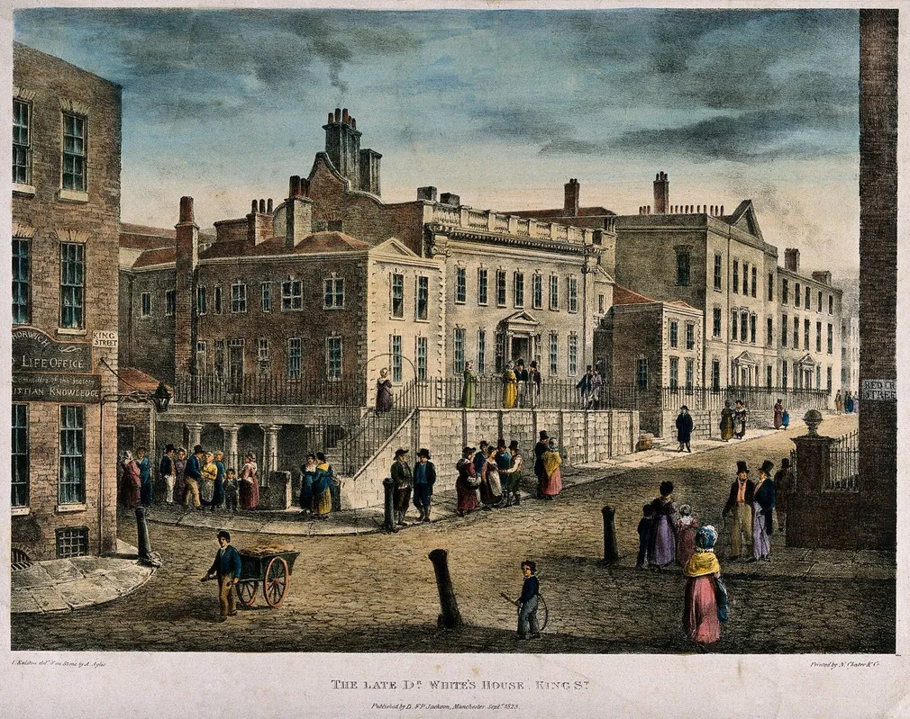
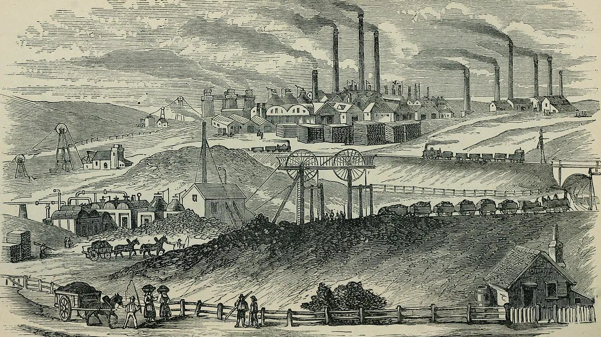

Prima parte:Nella prima parte troverai descritto come iniziò la rivoluzione industriale e in che paese avvenne ciò, in particolare verranno descritti i seguenti argomenti:.❖La popolazione europea torna a crescere; ❖L'agricoltura inglese è all'avanguardia; ❖La nascita degli Imprenditori; ❖La ricchezza dell'Inghilterra è legata anche ai commerci; ❖Il lavoro a domicilio non basta più; ❖L'industria tessile si innova con efficaci invenzioni; ❖Le principali fonti di energia utilizzate per le nuove macchine; ❖Perchè si parla di rivoluzione industriale. |
Seconda parte:Nella seconda parte verranno descritte le conseguenze della rivoluzione, in particolare verrano descritti i seguenti argomenti:❖La nascita delle fabbriche; ❖Il lavoro di fabbirca è più efficente; ❖Il lavoro di fabbrica è duro e malpagato; ❖Le città industriali crescono disordinatamente. |
Terza parte:Nella terza parte verranno desrcitti gli sviluppi della scienza e dei trasporti, in particolare verranno trattati i seguenti argomenti:❖Si sviluppa l'industria chimica; ❖Il vapore è applicato alle navi; ❖Il vapore è applicato ai treni; ❖Si annuncia una nuova energia: l'elettricità. |
|  |  |

|